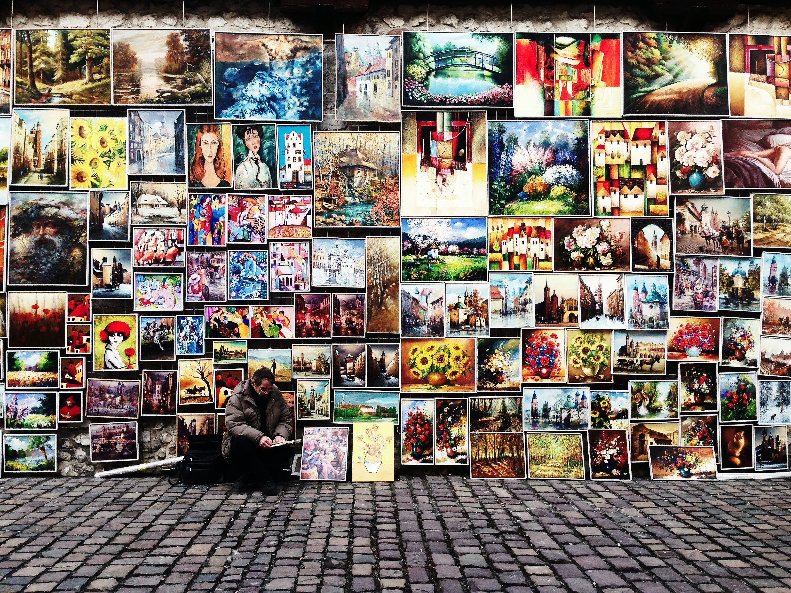
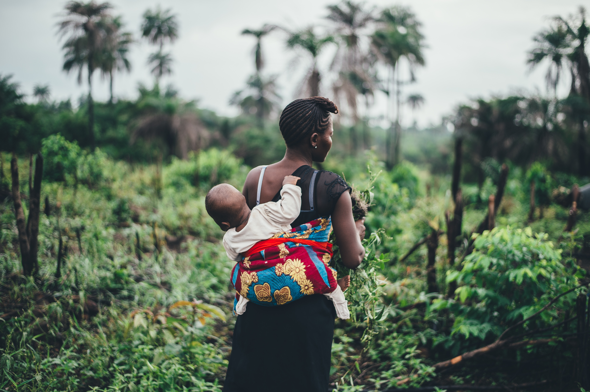

This website was created as a class project for ANTH 106, Introduction to Cultural Anthropology at UMASS BOSTON. It uses information from the book "Cultual Anthropology: A Toolkit For A Global Age", by Kenneth J. Guest. It is intended to provide beginner material for people interested interested in Anthropology or taking a class associated with it.